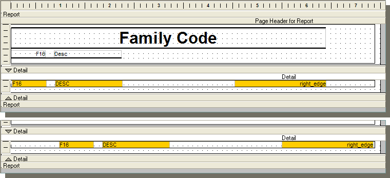

Reports with Different Left and Right Margins
It possible to format a report, so that alternate pages will have different left and right margins. This technique requires two steps:
Placement of a conditional object on the report layout with two layers that responds to the calculated value.
Placement of differently formatted report content on the two layers of the conditional object.
Creating the Conditional Object
Open the report in the Report Editor.
Display the Toolbox.
Select the Conditional Object tool and draw a box in the Detail section of the report. This box should be the width of the page and tall enough to contain all fields.
Define two layers for the conditional object.
Right click on the conditional object and select Properties... .
Display the Setup tab.
Enter the following expression in the Condition Expression field: mod(System->PageNumber,2)=1
Enter the following text in the Label field: "odd".
Enter the following expression in the Condition Expression field: mod(System->PageNumber,2)=0
Enter the following text in the Label field: "even".
Click OK.
Place The Report Content
Right click on the conditional object and select "odd".
Place the fields of the report as they would appear on an odd numbered page.
Right click on the conditional object and select "even".
Place the fields of the report again, as they would appear on an even numbered page.
Save the report and exit the Report Editor.
Detail Header and Footer
If the Detail section has Repeating Header and Repeating Footer sections, you may wish to place similar two layered conditional objects with field labels and/or calculated fields. The following picture shows a simple report layout. The two frames show the field placement on the "odd" and "even" layers of the condtional object. The yellow highlighting is only to make the fields easier to see.

See Also
Supported By
Alpha Five Version 5 and Above